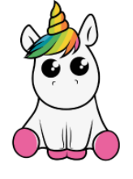

Bienvenido a mi trabajo realizado durante el primer trimestre, de la asignatura de Lenguajes de Marcas
Mi nombre es Antonio Javier García Corro, en esta página se puede acceder a todo lo relazionado con el trimestre. Esta organizado por temas. En cada tema podemos encontrar sus correspondientes tareas y prácticas realizadas en clase e incluso algunos ejemplos de examen.
Dentro de cada tema, también podemos encontrar enlaces a páginas de ayuda!
Empezar a explorar!
Antes de empezar, no podiamos dejar atrás a Medy, nos ha estado acompañando todo el trimestre.
